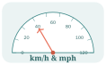
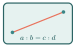

- ដោះស្រាយចំណោទដែលទាក់ទងនឹងសមាមាត្រ
- ដោះស្រាយចំណោទដែលទាក់ទងនឹងភាគរយ
- ដោះស្រាយចំណោទដែលទាក់ទងនឹងភាគរយកើន ឬ ថយ
- ដោះស្រាយចំណោទដែលទាក់ទងនឹងអត្រាការប្រាក់

រំលឹកចំណេះដឹង
សួស្តីប្អូនៗ! មុននឹងសិក្សាចំណោទសមាមាត្រ តោះរំលឹកការប្រៀបធៀបចំនួន និងការសរសេរប្រភាគសមមូលជាមុនសិន។
- បើ \(\displaystyle \frac{2}{3}=\frac{x}{12}\) នោះ \(\displaystyle 3x=24\) ដូចនេះ \(\displaystyle x=8\)។
- បើ \(\displaystyle 25\%=\frac{25}{100}\) នោះវាស្មើនឹង \(\displaystyle \frac{1}{4}\)។
ចំណេះដឹងទាំងនេះនឹងជួយឱ្យប្អូនៗបង្កើតសមាមាត្រ និងដោះស្រាយចំណោទជាក់ស្តែងបានយ៉ាងងាយស្រួល!

តើប្អូនៗត្រូវចេះអ្វីខ្លះមុនចូលមេរៀននេះ?
១. ប្រភាគសមមូល
ប្រភាគសមមូលមានតម្លៃស្មើគ្នា។ ឧទាហរណ៍ \(\displaystyle \frac{1}{2}=\frac{2}{4}=\frac{50}{100}\)។
២. ផលគុណខ្វែង
បើ \(\displaystyle \frac{a}{b}=\frac{c}{d}\) នោះ \(\displaystyle ad=bc\) ដែល \(\displaystyle b\neq0\) និង \(\displaystyle d\neq0\)។
៣. ភាគរយ
\(\displaystyle p\%=\frac{p}{100}\)។ ឧទាហរណ៍ \(\displaystyle 8\%=\frac{8}{100}=0.08\)។
សាកល្បង
ក. \(\displaystyle \frac{3}{5}=\frac{x}{20}\) រក \(\displaystyle x\) ខ. សរសេរ \(\displaystyle 12\%\) ជាទសភាគ គ. \(\displaystyle 4\) ជាប៉ុន្មានភាគរយនៃ \(\displaystyle 20\)?
ចម្លើយ ក. \(\displaystyle 12\) ខ. \(\displaystyle 0.12\) គ. \(\displaystyle 20\%\)
១. ចំណោទដែលទាក់ទងនឹងសមាមាត្រ
តើអ្វីទៅជាសមាមាត្រ?
ប្អូនៗប្រហែលជាធ្លាប់ជួយអ្នកម្តាយធ្វើម្ហូបហើយមែនទេ? បើអង្ករ ១ កំប៉ុង ត្រូវការទឹក ២ កំប៉ុង នោះបើចង់ដាំអង្ករ ២ កំប៉ុង ប្អូនៗច្បាស់ជាដឹងថាត្រូវការទឹក ៤ កំប៉ុង។ នេះហើយគឺជា "សមាមាត្រ"! គឺការប្រៀបធៀបរបស់ពីរដែលរក្សាភាពស្មើគ្នាជានិច្ច។
សមាមាត្រ (Proportion)
ក្នុងសមាមាត្រ \(\displaystyle \frac{a}{b} = \frac{c}{d}\) នោះគេទាញបាន \(\displaystyle ad = bc\)។
រូបមន្តនេះត្រូវបានប្រើប្រាស់យ៉ាងទូលំទូលាយក្នុងការដោះស្រាយចំណោទ ដែលទាក់ទងនឹងការប្ដូរឯកតានៃរង្វាស់រង្វាល់ ឬចំណោទភាគរយផ្សេងៗ។
ពន្យល់ពិសេសពីគ្រូ៖ ហេតុអ្វីបានជាមាន "ផលគុណខ្វែង"?
ប្អូនៗប្រហែលជាធ្លាប់ទន្ទេញថា \(\displaystyle \frac{a}{b} = \frac{c}{d} \implies ad = bc\) តែតើដឹងទេថាវាមកពីណា?
សាកស្រមៃមើលប្រភាគងាយៗ \(\displaystyle \frac{1}{2} = \frac{2}{4}\)។ បើយើងគុណខ្វែង (យក \(\displaystyle 1 \times 4\) និង \(\displaystyle 2 \times 2\)) យើងនឹងឃើញថាវាស្មើនឹង ៤ ដូចគ្នា!
តាមពិតទៅ នេះជាក្បួនបំបាត់ភាគបែង។ នៅពេលយើងមានប្រភាគស្មើគ្នា ការគុណខ្វែងជួយឱ្យយើងបំបាត់ប្រភាគ និងងាយស្រួលរកតួអញ្ញាតបានយ៉ាងលឿន!
ប្រព័ន្ធរង្វាស់រង្វាល់ក្នុងជីវិតប្រចាំថ្ងៃ
ប្រព័ន្ធនៃរង្វាស់រង្វាល់ដែលយើងធ្លាប់ប្រើនៅស្រុកខ្មែរគឺ ម៉ែត្រ (m) សម្រាប់ចម្ងាយផ្លូវ និង គីឡូក្រាម (kg) សម្រាប់ម៉ាស់នៃវត្ថុ។ ប៉ុន្តែនៅប្រទេសអឺរ៉ុប ឬអាមេរិក គេមានប្រព័ន្ធផ្សេងទៀតដូចជា ម៉ាយ (mile) អ៊ីញ (inch) ហ្វីត (feet) សម្រាប់ចម្ងាយ និងផោន (lb) សម្រាប់ម៉ាស់។ ខាងក្រោមនេះជាតារាងសមមូលរវាងឯកតាទាំងនេះ៖
| ១ ម៉ាយ (1 mile) \(\displaystyle \approx 1.609 \text{ km}\) | ១ អ៊ីញ (1 inch) \(\displaystyle \approx 2.54 \text{ cm}\) |
| ១ ហ្វីត (1 feet) \(\displaystyle \approx 0.3048 \text{ m}\) | ១ ផោន (1 lb) \(\displaystyle \approx 0.453 \text{ kg}\) |
ឧទាហរណ៍ទី១ ៖ ការប្ដូររង្វាស់រង្វាល់
ចូរប្ដូររង្វាស់ខាងក្រោមដោយប្រើវិធីសមាមាត្រ៖
ក. \(\displaystyle 1\text{ m}\) ទៅជា inch ខ. \(\displaystyle 100\text{ km}\) ទៅជា mile គ. \(\displaystyle 6\text{ feet}\) ទៅជា m ឃ. \(\displaystyle 1\text{ kg}\) ទៅជា lb
របៀបគិតជាជំហានៗ៖
តោះយើងមកបកស្រាយដោយប្រើការគុណខ្វែងទាំងអស់គ្នា! គន្លឹះសំខាន់គឺ រៀបចំឯកតាឱ្យត្រូវគ្នា ដូចជា អ៊ីញនៅជាមួយអ៊ីញ សង់ទីម៉ែត្រនៅជាមួយសង់ទីម៉ែត្រ។
- ក. យើងដឹងថា \(\displaystyle 1\text{ inch} \rightarrow 2.54\text{ cm}\)។ បើចង់ដឹងថា \(\displaystyle 1\text{ m}\) (ឬត្រូវនឹង \(\displaystyle 100\text{ cm}\)) ស្មើប៉ុន្មាន inch យើងតាងវាដោយអញ្ញាត \(\displaystyle x\)៖
\(\displaystyle \frac{1\text{ inch}}{x\text{ inch}} = \frac{2.54\text{ cm}}{100\text{ cm}}\)
បន្ទាប់មកប្រើផលគុណខ្វែង៖ \(\displaystyle 2.54 \times x = 1 \times 100 \implies 2.54x = 100 \implies x = \frac{100}{2.54} \approx 39.37\)។
ដូចនេះ \(\displaystyle 1\text{ m} \approx 39.37\text{ inch}\)។ - ខ. \(\displaystyle 1\text{ mile} \rightarrow 1.609\text{ km}\)។
\(\displaystyle \frac{1\text{ mile}}{x\text{ mile}} = \frac{1.609\text{ km}}{100\text{ km}} \implies 1.609x = 100 \implies x = \frac{100}{1.609} \approx 62.2\)។ ដូចនេះ \(\displaystyle 100\text{ km} \approx 62.2\text{ miles}\)។ - គ. \(\displaystyle 1\text{ feet} \rightarrow 0.3048\text{ m}\)។
\(\displaystyle \frac{1\text{ feet}}{6\text{ feet}} = \frac{0.3048\text{ m}}{x\text{ m}} \implies x = 6 \times 0.3048 = 1.8288 \approx 1.83\)។ ដូចនេះ \(\displaystyle 6\text{ feet} \approx 1.83\text{ m}\)។ - ឃ. \(\displaystyle 1\text{ lb} \rightarrow 0.453\text{ kg}\)។
\(\displaystyle \frac{1\text{ lb}}{x\text{ lb}} = \frac{0.453\text{ kg}}{1\text{ kg}} \implies x \times 0.453 = 1 \implies x = \frac{1}{0.453} \approx 2.2\)។ ដូចនេះ \(\displaystyle 1\text{ kg} \approx 2.2\text{ lb}\)។
ឧទាហរណ៍ទី២ ៖ អាងមួយមានចំណុះទឹក \(\displaystyle 7\,650\text{ dm}^3\)។ បើគេបញ្ចូលទឹកក្នុងល្បឿន \(\displaystyle 85\text{ dm}^3\) ក្នុង \(\displaystyle 2\) នាទី តើគេត្រូវប្រើពេលប៉ុន្មានទើបបញ្ចូលទឹកឱ្យពេញអាង?
ចម្លើយ៖ តោះយើងគិតលេងៗ... បើទំហំទឹកតិច ប្រើពេលតិច។ ដល់ពេលទំហំទឹកច្រើន ក៏ត្រូវប្រើពេលច្រើនដែរ។ នេះហើយជាសមាមាត្រ! តាង \(\displaystyle t\) ជារយៈពេលសម្រាប់បញ្ចូលទឹកពេញអាង៖
\(\displaystyle 85\text{ dm}^3 \to 2\text{ mn}\)
\(\displaystyle 7\,650\text{ dm}^3 \to t\text{ mn}\)
យើងបានសមាមាត្រ៖ \(\displaystyle \frac{85}{7\,650} = \frac{2}{t}\)។ ដោយគុណខ្វែងយើងបាន \(\displaystyle 85t = 2 \times 7\,650 \implies t = \frac{15\,300}{85} = 180\text{ mn}\)។
យើងដឹងថា \(\displaystyle 60\) នាទីស្មើនឹង ១ ម៉ោង។ ដូច្នេះ \(\displaystyle 180\text{ mn} = 3\text{ h}\)។ គេត្រូវប្រើពេល ៣ ម៉ោង ទើបពេញអាង។
ឧទាហរណ៍ទី៣ ៖ បើកង់វិលបាន \(\displaystyle 1\,750\) ជុំក្នុងរយៈពេល \(\displaystyle 5\) វិនាទី តើក្នុងរយៈពេលមួយម៉ោងវាវិលបានប៉ុន្មានជុំ?
ចម្លើយ៖ តាង \(\displaystyle n\) ជាចំនួនជុំដែលកង់នោះវិលក្នុងមួយម៉ោង។ សូមចាំថា ក្នុង១ម៉ោងមាន \(\displaystyle 3\,600\) វិនាទី!
\(\displaystyle 1\,750\) ជុំ \(\displaystyle \to 5\text{ s}\)
\(\displaystyle n\) ជុំ \(\displaystyle \to 3\,600\text{ s}\)
យើងបានសមាមាត្រ៖ \(\displaystyle \frac{1\,750}{n} = \frac{5}{3\,600} \implies 5n = 1\,750 \times 3\,600 \implies n = \frac{6\,300\,000}{5} = 1\,260\,000\text{ ជុំ}\)។
ដូចនេះ ក្នុងរយៈពេលមួយម៉ោង កង់វិលបាន ១ លាន ២ សែន ៦ ម៉ឺនជុំ!
ប្រតិបត្តិ៖ ភពព្រះចន្ទមកភពផែនដីមានចម្ងាយប្រមាណ \(\displaystyle 240\,000\text{ mile}\)។ បើគេប្រើវិទ្យុទាក់ទងដែលមានល្បឿន \(\displaystyle 186\,000\text{ mile}\) ក្នុងមួយវិនាទីដើម្បីទាក់ទងគ្នា តើគេត្រូវប្រើពេលអស់ប៉ុន្មានទើបទទួលសញ្ញាចេញពីភពព្រះចន្ទ?
២. ចំណោទដែលទាក់ទងនឹងភាគរយ
តើអ្វីទៅជាភាគរយ?
ពាក្យថា "ភាគរយ" មានន័យត្រង់ៗថា "ក្នុងចំណោម ១០០"។ ដូច្នេះ \(\displaystyle 25\%\) គ្រាន់តែជារបៀបសរសេរបញ្ឆិតបញ្ឆៀងរបស់ប្រភាគ \(\displaystyle \frac{25}{100}\) ប៉ុណ្ណោះ។ នៅពេលប្អូនៗចង់ដឹងថាចំនួន \(\displaystyle A\) ជាប៉ុន្មានភាគរយនៃចំនួន \(\displaystyle B\) ប្អូនៗគ្រាន់តែសរសេរវាជាប្រភាគ \(\displaystyle \frac{A}{B}\) ហើយគុណវាជាមួយ \(\displaystyle 100\%\) ជាការស្រេច!
រូបមន្តគណនាភាគរយ
ភាគរយនៃ \(\displaystyle a\) ធៀបនឹង \(\displaystyle b\) ត្រូវជា \(\displaystyle \frac{a}{b} \times 100 \%\)។
ប្រយ័ត្នច្រឡំ!
ភាគបែង \(\displaystyle b\) គឺជានិច្ចកាលជាចំនួនសរុប ឬ "ចំនួនគោល" ដែលយើងកំពុងធៀបជាមួយ។ បើយើងយកចំនួនខុសទៅដាក់នៅភាគបែង នោះភាគរយរបស់យើងនឹងខុសទាំងស្រុងហើយ!
ឧទាហរណ៍៖ បើប្អូនចង់ដឹងថា ៤ ជាប៉ុន្មានភាគរយនៃ ២០។ ចំនួនគោលគឺ ២០ (ព្រោះមានពាក្យ "នៃ")។ ដូច្នេះត្រូវយក \(\displaystyle \frac{4}{20}\) មិនមែន \(\displaystyle \frac{20}{4}\) នោះទេ!
ឧទាហរណ៍ទី១៖ នារីធ្វើតេស្តបានពិន្ទុ \(\displaystyle 8\) ហើយបូណាបានពិន្ទុ \(\displaystyle 6\) តើពិន្ទុបូណាត្រូវជាប៉ុន្មានភាគរយនៃពិន្ទុនារី?
ឧទាហរណ៍ទី២៖ ពូសុខរកបានប្រាក់ចំណូល \(\displaystyle 30\,000\text{ ៛}\) ចំណែកមីងសំរកបាន \(\displaystyle 25\,000\text{ ៛}\)។ រកភាគរយនៃប្រាក់ចំណូលពូសុខធៀបនឹងមីងសំ។
ចម្លើយទី១៖ ចំណុចគោលគឺ "ពិន្ទុនារី" (\(\displaystyle 8\))។ ដូច្នេះយើងត្រូវយកពិន្ទុបូណា (\(\displaystyle 6\)) ចែកនឹងពិន្ទុនារី។ \(\displaystyle \frac{6}{8} = \frac{3}{4} = 0.75 = 75\%\)។ ដូចនេះពិន្ទុបូណាត្រូវជា \(\displaystyle 75\%\) នៃពិន្ទុនារី។
ចម្លើយទី២៖ ចំណុចគោលគឺ "ចំណូលមីងសំ" (\(\displaystyle 25\,000\))។ ដូច្នេះយកចំណូលពូសុខចែកនឹងចំណូលមីងសំ។ \(\displaystyle \frac{30\,000}{25\,000} = \frac{6}{5} = 1.2 = 120\%\)។ ដូចនេះប្រាក់ចំណូលពូសុខត្រូវជា \(\displaystyle 120\%\) នៃប្រាក់ចំណូលមីងសំ។ (គាត់រកបានលើស ១០០
ឧទាហរណ៍ទី៣៖ វិសាលរកប្រាក់បាន \(\displaystyle 300\,000\text{ ៛}\) ក្នុងមួយខែ ហើយសន្សំទុកបាន \(\displaystyle 60\,000\text{ ៛}\)។ រកភាគរយនៃប្រាក់ដែលវិសាលបានសន្សំទុក។
ចម្លើយ៖ ចំនួនគោលគឺប្រាក់សរុបប្រចាំខែ។ ភាគរយប្រាក់សន្សំ \(\displaystyle = \frac{60\,000}{300\,000} \times 100\% = \frac{1}{5} \times 100\% = 20\%\)។
ឧទាហរណ៍ទី៤៖ សុខត្រូវរកប្រាក់ឱ្យបាន \(\displaystyle 35\) លានរៀលសម្រាប់សង់លំនៅដ្ឋានមួយ ឥឡូវនេះគាត់សន្សំបាន \(\displaystyle 60\%\) នៃប្រាក់នេះហើយ។ រកប្រាក់ដែលគាត់សន្សំបាន។
ចម្លើយ៖ លំហាត់នេះគេប្រាប់ភាគរយមកស្រាប់ ចុះយើងត្រូវគិតបែបណា? តាង \(\displaystyle x\) ជាប្រាក់ដែលគាត់សន្សំបាន។
យើងដឹងថា ប្រាក់សន្សំធៀបនឹងប្រាក់គោល ៣៥ លាន គឺស្មើនឹង \(\displaystyle 60\%\) (ឬ \(\displaystyle \frac{60}{100}\))។
ហេតុនេះយើងបានសមាមាត្រ៖ \(\displaystyle \frac{x}{35} = \frac{60}{100}\)។
គុណខ្វែងមកយើងបាន៖ \(\displaystyle 100x = 60 \times 35 \implies 100x = 2100 \implies x = \frac{2100}{100} = 21\)។
ដូចនេះ គាត់សន្សំបានប្រាក់ \(\displaystyle 21\) លានរៀលហើយ!
ឧទាហរណ៍ទី៥៖ សុខនិងបូណាបានសហការជួយលក់ទំនិញឱ្យក្រុមហ៊ុនមួយ។ ក្រុមហ៊ុនឱ្យប្រាក់កម្រៃទៅសុខចំនួន \(\displaystyle 10\%\) នៃប្រាក់ដែលបានលក់ ហើយសុខចែករំលែកទៅបូណាចំនួន \(\displaystyle 20\%\) នៃប្រាក់ដែលបានទទួលពីក្រុមហ៊ុន។ តើបូណាត្រូវទទួលបានប្រាក់ប៉ុន្មាន បើប្រាក់ដែលលក់បានស្មើនឹង \(\displaystyle 4\) លានរៀល។
របៀបគិត៖ យើងត្រូវគិតជា២តំណាក់កាល។
ជំហានទី១៖ រកប្រាក់សុខសិន! សុខបាន \(\displaystyle 10\%\) នៃ ៤ លាន។ តាងដោយ \(\displaystyle x\)៖ \(\displaystyle \frac{x}{4} = \frac{10}{100} \implies x = 0.4\) លានរៀល (ឬ \(\displaystyle 400\,000\text{ ៛}\))។
ជំហានទី២៖ រកប្រាក់បូណា។ បូណាបាន \(\displaystyle 20\%\) ចេញពីលុយសុខ (មិនមែនលុយក្រុមហ៊ុនទេ!)។ តាងដោយ \(\displaystyle y\)៖ \(\displaystyle \frac{y}{0.4} = \frac{20}{100} \implies y = 0.08\) លានរៀល។
ដូចនេះ បូណាទទួលបានទឹកប្រាក់ \(\displaystyle 0.08\) លានរៀល ឬ \(\displaystyle 80\,000\text{ ៛}\)។
ប្រតិបត្តិ៖ ក្រុមហ៊ុនអចលនវត្ថុលក់ដីឱ្យគេដោយទទួលបានប្រាក់កម្រៃ \(\displaystyle 1\,800\$\) ត្រូវជា \(\displaystyle 3\%\) នៃថ្លៃដី។ តើដីដែលត្រូវលក់ថ្លៃប៉ុន្មាន?
៣. ចំណោទនៃភាគរយកើន ឬ ថយ
រូបមន្តគណនាភាគរយកំណើន និងតំហយ
នៅពេលប្រៀបធៀបរបស់ដែលប្រែប្រួលតាមពេលវេលា៖
- បើគេបង្កើនពីចំនួនដើម \(\displaystyle a\) ទៅ \(\displaystyle b\) ភាគរយនៃកំណើន កំណត់ដោយ \(\displaystyle \frac{\text{កំណើន}\rule[-0.5em]{0pt}{1.55em}}{\text{ចំនួនដើម}\rule[-0.5em]{0pt}{1.55em}} = \frac{b - a}{a} \times 100\%\)
- បើគេបន្ថយពីចំនួនដើម \(\displaystyle b\) មក \(\displaystyle a\) ភាគរយនៃតំហយ កំណត់ដោយ \(\displaystyle \frac{\text{តំហយ}\rule[-0.5em]{0pt}{1.55em}}{\text{ចំនួនដើម}\rule[-0.5em]{0pt}{1.55em}} = \frac{b - a}{b} \times 100\%\)
ពន្យល់ពិសេសពីគ្រូ៖ គន្លឹះគិតលេខរហ័សពេលទិញទំនិញបញ្ចុះតម្លៃ
បើគេសរសេរថា "Discount 20
ឧទាហរណ៍ទី១៖ បើគេបង្កើនចំនួនពី \(\displaystyle 4\) ទៅ \(\displaystyle 5\) តើគេបានបង្កើនប៉ុន្មានភាគរយ?
ឧទាហរណ៍ទី២៖ បើគេបន្ថយចំនួនពី \(\displaystyle 5\) មក \(\displaystyle 4\) តើគេបានបន្ថយអស់ប៉ុន្មានភាគរយ?
ចម្លើយទី១ (កំណើន)៖ ចំនួនដើម \(\displaystyle 4\), ចំនួនកើន \(\displaystyle 5\), កំណើន \(\displaystyle 5 - 4 = 1\)។
ភាគរយកំណើន \(\displaystyle =\frac{1}{4} \times 100\% = 25\%\)។ (មានន័យថាវាធំជាងមុនមួយភាគបួន)
ចម្លើយទី២ (តំហយ)៖ ចំនួនដើម \(\displaystyle 5\), ចំនួនថយ \(\displaystyle 4\), តំហយ \(\displaystyle 5 - 4 = 1\)។
ភាគរយតំហយ \(\displaystyle =\frac{1}{5} \times 100\% = 20\%\)។ (ឃើញទេ? បើទោះជាប្រែប្រួល ១ លេខដូចគ្នាក៏ពិតមែន តែដោយសារចំនួនដើមខុសគ្នា ភាគរយក៏ខុសគ្នាដែរ!)
ឧទាហរណ៍ទី៣៖ សុខទិញខោមួយថ្លៃ \(\displaystyle 32\,000\text{ ៛}\) ជាតម្លៃមួយដែលគេបានបញ្ចុះតម្លៃអស់ \(\displaystyle 60\%\)។ ចូរកំណត់ថ្លៃខោនេះនៅពេលដែលគេមិនទាន់បញ្ចុះតម្លៃ។
របៀបគិត៖ បើគេបញ្ចុះ \(\displaystyle 60\%\) មានន័យថាសុខបង់លុយតែ \(\displaystyle 40\%\) នៃតម្លៃពេញប៉ុណ្ណោះ។ តាង \(\displaystyle n\) ជាតម្លៃដើម។ យើងបាន \(\displaystyle \frac{40}{100} \times n = 32\,000\)។
\(\displaystyle 0.4n = 32\,000 \implies n = \frac{32\,000}{0.4} = 80\,000\)។ ដូចនេះ តម្លៃដើមស្មើនឹង \(\displaystyle 80\,000\text{ ៛}\)។
ឧទាហរណ៍ទី៤៖ រកតម្លៃដើមនៃសម្ភារៈមួយដែលបន្ទាប់ពីបញ្ចុះតម្លៃ \(\displaystyle 40\%\) លក់ក្នុងតម្លៃ \(\displaystyle 3\,600\text{ ៛}\)។
របៀបគិត៖ ស្រដៀងគ្នានឹងលំហាត់ខាងលើដែរ។ បញ្ចុះតម្លៃ \(\displaystyle 40\%\) បានន័យថាយើងបង់តែ \(\displaystyle 60\%\) ប៉ុណ្ណោះ។ តាង \(\displaystyle n\) ជាតម្លៃដើម។
\(\displaystyle n \times \frac{60}{100} = 3\,600 \implies 0.6n = 3\,600 \implies n = \frac{3\,600}{0.6} = 6\,000\)។ ដូចនេះ តម្លៃដើមស្មើនឹង \(\displaystyle 6\,000\text{ ៛}\)។
ប្រតិបត្តិ៖
ក. ប្រេងសាំងពីមុនលក់ ១ លីត្រថ្លៃ \(\displaystyle 4\,800\text{ ៛}\) ឥឡូវនេះលក់ថ្លៃតែ \(\displaystyle 4\,200\text{ ៛}\)។ តើប្រេងសាំងចុះថ្លៃអស់ប៉ុន្មានភាគរយ?
ខ. ឆ្នាំទៅសាលារៀនមួយទទួលសិស្សបានតែ \(\displaystyle 800\) នាក់។ ប៉ុន្តែឆ្នាំនេះ ការទទួលសិស្សបានកើនឡើង \(\displaystyle 10\%\)។ រកចំនួនសិស្សនៃឆ្នាំនេះ។
៤. ការប្រាក់
តើធនាគារដំណើរការយ៉ាងដូចម្តេច?
នៅពេលប្អូនៗយកប្រាក់ ១០០ រៀលទៅផ្ញើនៅធនាគារក្នុងរយៈពេលមួយឆ្នាំ ធនាគារអាចនឹងថែមលុយឱ្យប្អូន ៨ រៀល។ លុយ ៨ រៀលនោះហៅថា ការប្រាក់។ ការប្រាក់ធៀបនឹងប្រាក់ដើម តាងដោយប្រភាគ \(\displaystyle \frac{8}{100}\) ឬ ជាភាគរយ \(\displaystyle 8\%\) ដែលយើងហៅថា អត្រានៃការប្រាក់ ប្រចាំឆ្នាំ។ ធនាគារទាញយកអត្រានេះមកប្រើដើម្បីគណនាផលចំណេញដែលអ្នកគួរទទួលបានរាល់ឆ្នាំ។
រូបមន្តអត្រាការប្រាក់សមាស (Compound Interest)
"ការប្រាក់សមាស" មានន័យថា ការប្រាក់ដែលយើងទទួលបានឆ្នាំនេះ នឹងក្លាយជាប្រាក់ដើមសម្រាប់យកការប្រាក់នៅឆ្នាំក្រោយទៀត។ បើ \(\displaystyle P_0\) ជាប្រាក់ដើម, \(\displaystyle r\) ជាអត្រាការប្រាក់ក្នុងមួយឆ្នាំ ហើយ \(\displaystyle t\) ជារយៈពេល (គិតជាឆ្នាំ)នៃការដាក់យកកម្រៃ៖
ប្រាក់សរុប \(\displaystyle P = P_0(1+r)^t\)
ឧទាហរណ៍ទី១៖ ឌីណាសំចៃប្រាក់ \(\displaystyle 400\,000\text{ ៛}\) ទៅដាក់យកការប្រាក់ ដោយទទួលបានអត្រាការប្រាក់ \(\displaystyle 8\%\) ក្នុងមួយឆ្នាំ។ បើគាត់នៅតែបន្តដាក់យកការប្រាក់ជាបន្តបន្ទាប់រហូតដល់ឆ្នាំទី ៤ តើប្រាក់គាត់នឹងកើនបានប៉ុន្មាន? (គាត់តម្កល់ទុកទាំងការប្រាក់និងប្រាក់ដើម)។
របៀបគិត៖ តោះយើងសាកល្បងមើលថាតើការប្រាក់សមាស "បំប៉ោង" ប្រាក់របស់យើងយ៉ាងដូចម្តេចខ្លះ!
- ឆ្នាំទី១៖ ដើមឆ្នាំមាន \(\displaystyle 400\,000\)។ ដល់ចុងឆ្នាំប្រាក់សរុប \(\displaystyle P_1 = 400\,000 + (400\,000 \times 0.08) = 432\,000\text{ ៛}\)
- ឆ្នាំទី២៖ ពេលនេះលុយដើមរបស់យើងមិនមែន ៤ សែនទៀតទេ គឺឡើងដល់ \(\displaystyle 432\,000\) ទៅហើយ!
ចុងឆ្នាំ \(\displaystyle P_2 = 432\,000 + (432\,000 \times 0.08) = 466\,560\text{ ៛}\) - ឆ្នាំទី៣៖ ចុងឆ្នាំ \(\displaystyle P_3 = 466\,560 + (466\,560 \times 0.08) = 503\,884.8\text{ ៛}\)
- ឆ្នាំទី៤៖ ចុងឆ្នាំ \(\displaystyle P_4 = 503\,884.8 + (503\,884.8 \times 0.08) \approx 544\,195.5\text{ ៛}\)
នេះសបញ្ជាក់ថា ដោយសារការតម្កល់ប្រាក់រហូត ប្រាក់របស់គាត់កើនឡើងប្រហែល \(\displaystyle 144\,195.5\text{ ៛}\) (កើនឡើងរហូតដល់ប្រហែល \(\displaystyle 36\%\)!)។ នេះហើយជាថាមពលនៃការសន្សំជាមួយការប្រាក់សមាស!
គិតរហ័សតាមរូបមន្ត៖ ជំនួសឱ្យការបូកសរុបម្តងមួយឆ្នាំ ដែលត្រូវប្រើពេលយូរ យើងគ្រាន់តែប្រើរូបមន្ត \(\displaystyle P = P_0(1+r)^t\)៖
\(\displaystyle P = 400\,000(1 + 0.08)^4 = 400\,000(1.08)^4 \approx 544\,195.5\text{ ៛}\)។ (ឃើញទេ លឿនជាងច្រើន ហើយត្រឹមត្រូវទៀត!)
ឧទាហរណ៍ទី២៖ ពូសុខយកប្រាក់ទៅសន្សំដោយទទួលការប្រាក់ \(\displaystyle 10\%\) ក្នុងមួយឆ្នាំ។ តើគាត់ត្រូវដាក់រយៈពេលប៉ុន្មានឆ្នាំ ទើបបានប្រាក់សរុបស្មើនឹងទ្វេដងនៃប្រាក់ដើម?
ចម្លើយ៖ បើយើងចង់បានលុយទ្វេដង មានន័យថាប្រាក់សរុប \(\displaystyle P = 2P_0\)។ អត្រាការប្រាក់ \(\displaystyle r = 0.1\)។ តាមរូបមន្ត \(\displaystyle P = P_0(1+r)^t\)៖
\(\displaystyle 2P_0 = P_0(1+0.1)^t \implies (1.1)^t = 2\)
តោះសាកស្មានតម្លៃ \(\displaystyle t\): បើ \(\displaystyle t=7\) នោះ \(\displaystyle (1.1)^7 \approx 1.94\)។ បើ \(\displaystyle t=8\) នោះ \(\displaystyle (1.1)^8 \approx 2.14\)។
ដោយ \(\displaystyle 2\) នៅចន្លោះ \(\displaystyle 1.94\) និង \(\displaystyle 2.14\) តែខិតជិតតម្លៃក្នុងឆ្នាំទី៨ ដូចនេះគាត់ត្រូវរង់ចាំប្រហែល ៨ ឆ្នាំ ទើបប្រាក់កើនឡើងទ្វេដង។
ប្រតិបត្តិ៖ ពូសុខយកប្រាក់ \(\displaystyle 500\,000\text{ ៛}\) ទៅដាក់យកការប្រាក់ ពីរឆ្នាំក្រោយមកគេបានប្រាក់សរុប \(\displaystyle 605\,000\text{ ៛}\)។ រកអត្រានៃការប្រាក់ក្នុងមួយឆ្នាំ។
លំហាត់អនុវត្តន៍
- គណនា \(\displaystyle n\) ដែល៖
ក. \(\displaystyle 30\%\) នៃ \(\displaystyle n\) ស្មើនឹង \(\displaystyle 48\) ខ. \(\displaystyle 25\%\) នៃ \(\displaystyle 28\) ស្មើនឹង \(\displaystyle n\) គ. \(\displaystyle 17\) ជា \(\displaystyle n\%\) នៃ \(\displaystyle 85\)
ឃ. \(\displaystyle n\%\) នៃ \(\displaystyle 150\) ស្មើនឹង \(\displaystyle 20\) ង. \(\displaystyle n\) ស្មើនឹង \(\displaystyle 30\%\) នៃ \(\displaystyle 400\) - តេស្តមួយមាន ២០ សំណួរ នារីធ្វើត្រូវបាន ១៧ សំណួរ។ រកភាគរយនៃសំណួរដែលធ្វើត្រូវ។
- អាវមួយធ្លាប់លក់ថ្លៃ \(\displaystyle 25\,000\) រៀល ហើយឥឡូវលក់ \(\displaystyle 20\,000\) រៀល។ ចូររកភាគរយនៃការលក់បញ្ចុះថ្លៃ។
- សាលារៀន A មានសិស្ស \(\displaystyle 2\,400\) នាក់ ហើយសាលារៀន B មានសិស្ស \(\displaystyle 3\,000\) នាក់។ ចូររកភាគរយនៃសិស្សសាលារៀន A ធៀបនឹងសាលារៀន B។
- វណ្ណាចង់ទិញកង់មួយថ្លៃ \(\displaystyle 350\,000\) រៀល ឥឡូវនេះគាត់សន្សំបាន \(\displaystyle 60\%\) នៃថ្លៃកង់រួចហើយ។ តើគាត់នៅខ្វះប្រាក់ប៉ុន្មានទៀតទើបទិញកង់នោះបាន?
- សុខសន្សំបានប្រាក់ \(\displaystyle 60\$\) ដែលត្រូវជា \(\displaystyle 80\%\) នៃតម្លៃម៉ាស៊ីនថតរូប។ តើម៉ាស៊ីននោះថ្លៃប៉ុន្មាន?
- ឆ្នាំនេះសាលារៀនទទួលសិស្សបាន \(\displaystyle 4\,200\) នាក់ តួលេខនេះកើនជាងឆ្នាំមុន \(\displaystyle 20\%\)។ ចូររកចំនួនសិស្សនៃឆ្នាំចាស់។
- ទំនិញមួយបានលក់បញ្ចុះតម្លៃ \(\displaystyle 16\%\) ដោយលក់ក្នុងតម្លៃ \(\displaystyle 4\,200\) រៀល រកតម្លៃមុនបញ្ចុះតម្លៃ។
- មីងសំបានខ្ចីប្រាក់ពីធនាគារ ១ លានរៀល ដែលមានអត្រាការប្រាក់ \(\displaystyle 12\%\)។ គាត់យកប្រាក់ \(\displaystyle 600\,000\) ទៅរកស៊ីចំណេញបាន \(\displaystyle 180\,000\text{ ៛}\) ហើយប្រាក់ដែលនៅសល់ \(\displaystyle 400\,000\text{ ៛}\) យកទៅបន្តចងការឱ្យគេក្នុងអត្រា \(\displaystyle 14\%\) ក្នុងមួយឆ្នាំ។ នៅពេលបំណាច់ឆ្នាំ តើមីងសំចំណេញឬខាត?
- នៅឆ្នាំនេះគេផ្ដល់អាហារូបករណ៍ឱ្យសិស្សចំនួន \(\displaystyle 8\%\) នៃសិស្សដែលបានប្រឡងជាប់សញ្ញាប័ត្រមធ្យមសិក្សាទុតិយភូមិ ដើម្បីបន្តសិក្សានៅមហាវិទ្យាល័យ។ ចូររកចំនួនសិស្សដែលបានទទួលអាហារូបករណ៍ បើការប្រឡងសញ្ញាប័ត្រទុតិយភូមិជាប់ត្រឹមតែ \(\displaystyle 70\%\) ក្នុងចំណោមបេក្ខជន \(\displaystyle 80\,000\) នាក់។
លំហាត់វាយតម្លៃសមត្ថភាព PISA
មាត្រដ្ឋានផែនទី
ផែនទីមួយប្រើមាត្រដ្ឋាន \(\displaystyle 1cm:2km\) (មានន័យថា \(\displaystyle 1cm\) លើផែនទី ស្មើនឹង \(\displaystyle 2km\) នៅទីតាំងពិត)។ សិស្សម្នាក់កំពុងមើលផែនទីដើម្បីវាស់ចម្ងាយពីសាលារៀនទៅផ្សារ។
សំណួរទី១៖ បើចម្ងាយលើផែនទីពីសាលាទៅផ្សារស្មើ \(\displaystyle 3.5cm\) តើចម្ងាយពិតស្មើប៉ុន្មានគីឡូម៉ែត្រ?
ចម្លើយ៖
សំណួរទី២៖ បើសិស្សម្នាក់ជិះកង់ក្នុងល្បឿន \(\displaystyle 14km/h\) តើគាត់ត្រូវចំណាយពេលប៉ុន្មាននាទីដើម្បីធ្វើដំណើរពីសាលាទៅផ្សារ?
- ក. \(\displaystyle 15\) នាទី
- ខ. \(\displaystyle 30\) នាទី
- គ. \(\displaystyle 45\) នាទី
- ឃ. \(\displaystyle 60\) នាទី
សំណួរទី៣៖ ហេតុអ្វីបានជាគេចាំបាច់ត្រូវប្រើមាត្រដ្ឋានក្នុងការគូរផែនទី? ពន្យល់។
ចម្លើយ៖
ការធ្វើទឹកក្រូចឆ្មារ
រូបមន្តធ្វើទឹកក្រូចឆ្មារសម្រាប់មនុស្ស \(\displaystyle 4\) នាក់ ត្រូវការគ្រឿងផ្សំដូចជា៖ ទឹកស្អាត \(\displaystyle 800ml\), ទឹកក្រូចឆ្មារ \(\displaystyle 200ml\) និងស្ករស \(\displaystyle 100g\)។ សុជាតាចង់យកវាទៅធ្វើលក់។
សំណួរទី១៖ បំពេញតារាងខាងក្រោមសម្រាប់បរិមាណគ្រឿងផ្សំដែលត្រូវប្រើ ប្រសិនបើនាងចង់ធ្វើសម្រាប់មនុស្ស \(\displaystyle 10\) នាក់ និង \(\displaystyle 20\) នាក់។
| គ្រឿងផ្សំ | សម្រាប់ ១០ នាក់ | សម្រាប់ ២០ នាក់ |
| ទឹកស្អាត (\(\displaystyle ml\)) | ||
| ទឹកក្រូចឆ្មារ (\(\displaystyle ml\)) | ||
| ស្ករស (\(\displaystyle g\)) |
សំណួរទី២៖ សូមគូសសញ្ញា \(\displaystyle \checkmark\) ក្នុងតារាងខាងក្រោមថាតើការអះអាងនីមួយៗទាក់ទងនឹងសមាមាត្រនេះ "ពិត" ឬ "មិនពិត"។
| ការអះអាង | ពិត | មិនពិត |
| ១. ផលធៀបរវាងទឹកស្អាត និងទឹកក្រូចឆ្មារគឺ \(\displaystyle 4:1\)។ | ||
| ២. បើមានស្ករស \(\displaystyle 50g\) នាងអាចធ្វើទឹកក្រូចឆ្មារបានសម្រាប់មនុស្ស ២ នាក់។ | ||
| ៣. បរិមាណគ្រឿងផ្សំកើនឡើង ២ ដង នៅពេលចំនួនមនុស្សកើនឡើង ៤ ដង។ |
សំណួរទី៣៖ ថ្ងៃនេះសុជាតាមានទឹកក្រូចឆ្មារតែ \(\displaystyle 150ml\) ប៉ុណ្ណោះ។ តើនាងអាចធ្វើទឹកក្រូចឆ្មារដោយរក្សាសមាមាត្រតាមរូបមន្តដដែលបានសម្រាប់មនុស្សប៉ុន្មាននាក់?
ចម្លើយ៖
ការលក់បញ្ចុះតម្លៃ
ហាងលក់សម្លៀកបំពាក់មួយមានកម្មវិធីបញ្ចុះតម្លៃពិសេសចុងឆ្នាំ។ ខោមួយដែលធ្លាប់លក់ក្នុងតម្លៃ \(\displaystyle 30\,000\) រៀល ឥឡូវត្រូវបានបញ្ចុះតម្លៃ \(\displaystyle 40\%\)។
សំណួរទី១៖ តើអតិថិជនត្រូវចំណាយប្រាក់ប៉ុន្មានរៀលដើម្បីទិញខោនេះក្រោយពេលបញ្ចុះតម្លៃ?
ចម្លើយ៖
សំណួរទី២៖ សុខសន្សំប្រាក់បាន \(\displaystyle 20\,000\) រៀល។ តើគាត់មានប្រាក់គ្រប់គ្រាន់សម្រាប់ទិញខោនេះដែរឬទេ?
- \(\displaystyle [\) \(\displaystyle ]\) បាទ/ចាស (Yes)
- \(\displaystyle [\) \(\displaystyle ]\) ទេ (No)
ហេតុផល៖
សំណួរទី៣៖ បើហាងមួយទៀតលក់ខោប្រភេទដូចគ្នា តម្លៃ \(\displaystyle 40\,000\) រៀល តែបញ្ចុះតម្លៃ \(\displaystyle 55\%\)។ តើអ្នកគួរទិញខោនៅហាងមួយណាទើបចំណេញជាង?
- ក. ហាងទី១ ព្រោះតម្លៃក្រោយបញ្ចុះគឺ \(\displaystyle 18\,000\) រៀល
- ខ. ហាងទី២ ព្រោះតម្លៃក្រោយបញ្ចុះគឺ \(\displaystyle 18\,000\) រៀល
- គ. ហាងទី១ ព្រោះតម្លៃដើមថោកជាង
- ឃ. ហាងទាំង២ លក់ក្នុងតម្លៃក្រោយបញ្ចុះស្មើគ្នា
ការសន្សំប្រាក់នៅធនាគារ
ឌីណាសំចៃប្រាក់បាន \(\displaystyle 500\,000\) រៀល ហើយសម្រេចចិត្តយកទៅផ្ញើនៅធនាគារក្នុងគណនីសន្សំ ដែលទទួលបានអត្រាការប្រាក់សមាស \(\displaystyle 8\%\) ក្នុងមួយឆ្នាំ។ នាងមិនដកប្រាក់ការនោះចេញទេ ដោយទុកឱ្យវាកើនជារៀងរាល់ឆ្នាំ។
សំណួរទី១៖ បំពេញតារាងខាងក្រោមដើម្បីបង្ហាញពីកំណើនប្រាក់សរុបរបស់ឌីណានៅចុងឆ្នាំនីមួយៗ (រហូតដល់ចុងឆ្នាំទី៣)។
| ចុងឆ្នាំទី | ទឹកប្រាក់សរុប (រៀល) |
| ១ | \(\displaystyle 540\,000\) |
| ២ | |
| ៣ |
សំណួរទី២៖ សូមគូសសញ្ញា \(\displaystyle \checkmark\) ក្នុងតារាងខាងក្រោមថាតើការអះអាងនីមួយៗ "ពិត" ឬ "មិនពិត" ទាក់ទងនឹងការប្រាក់សមាសនេះ។
| ការអះអាង | ពិត | មិនពិត |
| ១. ប្រាក់ការដែលនាងទទួលបាននៅឆ្នាំទី២ ច្រើនជាងប្រាក់ការនៅឆ្នាំទី១។ | ||
| ២. ការប្រាក់ដែលនាងទទួលបានជារៀងរាល់ឆ្នាំមានចំនួនថេរ (\(\displaystyle 40\,000\) រៀល)។ | ||
| ៣. ទឹកប្រាក់សរុបមានកំណើនជាសមាមាត្រធៀបនឹងចំនួនឆ្នាំ។ |
សំណួរទី៣៖ ហេតុអ្វីបានជាធនាគារផ្តល់អត្រាការប្រាក់សមាសមានប្រយោជន៍ជាងការប្រាក់សាមញ្ញ សម្រាប់ការសន្សំរយៈពេលយូរ?
ចម្លើយ៖
ការប្ដូររូបិយប័ណ្ណ
វិចិត្រត្រូវធ្វើដំណើរទៅប្រទេសថៃដើម្បីចូលរួមកីឡា។ គាត់បានទៅកន្លែងប្ដូរប្រាក់ ដែលមានអត្រាប្ដូរប្រាក់ \(\displaystyle 1\) បាត (THB) ស្មើនឹង \(\displaystyle 115\) រៀល (KHR)។ គាត់មានប្រាក់ \(\displaystyle 460\,000\) រៀល។
សំណួរទី១៖ តើវិចិត្រអាចប្ដូរបានប្រាក់ប៉ុន្មានបាត?
- ក. \(\displaystyle 3\,500\) បាត
- ខ. \(\displaystyle 4\,000\) បាត
- គ. \(\displaystyle 4\,600\) បាត
- ឃ. \(\displaystyle 5\,000\) បាត
សំណួរទី២៖ ពេលនៅប្រទេសថៃ វិចិត្រចង់ទិញស្បែកជើងមួយគូដែលមានតម្លៃ \(\displaystyle 2\,500\) បាត។ តើស្បែកជើងនោះមានតម្លៃស្មើនឹងប៉ុន្មានរៀល?
ចម្លើយ៖
សំណួរទី៣៖ ក្រោយពីទិញស្បែកជើងរួច គាត់នៅសល់ប្រាក់បាតមួយចំនួន។ ប្រសិនបើគាត់ចង់ប្ដូរប្រាក់ដែលនៅសល់នោះត្រលប់មករៀលវិញ តើគាត់អាចប្រើប្រាស់អត្រា \(\displaystyle 1\) បាត ស្មើនឹង \(\displaystyle 115\) រៀលដូចពេលទិញដដែលឬទេ ក្នុងជីវិតជាក់ស្តែង? (សន្មតថាទីផ្សារអត្រាប្ដូរប្រាក់មិនប្រែប្រួល)
- \(\displaystyle [\) \(\displaystyle ]\) បាទ/ចាស (Yes)
- \(\displaystyle [\) \(\displaystyle ]\) ទេ (No)
ពន្យល់ហេតុផល៖
Sដំណោះស្រាយចម្លើយសាកល្បងខ្លួនឯងទី ១
តាង \(\displaystyle t\) ជារយៈពេលដែលត្រូវប្រើ៖ \(\displaystyle \frac{240\,000}{t} = \frac{186\,000}{1} \implies t = \frac{240\,000}{186\,000} \approx 1.29\text{ s}\)។
ដូចនេះ គេត្រូវប្រើពេលប្រហែល \(\displaystyle 1.29\) វិនាទី។
Sដំណោះស្រាយចម្លើយសាកល្បងខ្លួនឯងទី ២
តាង \(\displaystyle x\) ជាថ្លៃដីសរុប។ \(\displaystyle 3\%\) នៃ \(\displaystyle x = 1\,800\$ \implies \frac{3}{100} x = 1\,800 \implies x = \frac{1\,800 \times 100}{3} = 60\,000\$\)។
ដូចនេះ ដីនោះត្រូវលក់ក្នុងតម្លៃ \(\displaystyle 60\,000\$\)។
Sដំណោះស្រាយចម្លើយសាកល្បងខ្លួនឯងទី ៣
ក. ភាគរយតំហយ \(\displaystyle =\frac{4\,800 - 4\,200}{4\,800} \times 100\% = \frac{600}{4\,800} \times 100\% = 12.5\%\)។ ដូចនេះ ប្រេងសាំងចុះថ្លៃ \(\displaystyle 12.5\%\)។
ខ. ចំនួនសិស្សឆ្នាំចាស់ \(\displaystyle 800\) នាក់, កើន \(\displaystyle 10\%\)។ សិស្សឆ្នាំនេះ \(\displaystyle = 800 + (800 \times 10\%) = 880\) នាក់។
Sដំណោះស្រាយចម្លើយសាកល្បងខ្លួនឯងទី ៤
តាមរូបមន្ត \(\displaystyle P = P_0(1+r)^t \implies 605\,000 = 500\,000(1+r)^2 \implies (1+r)^2 = \frac{605\,000}{500\,000} = 1.21\)។
នាំឱ្យ \(\displaystyle 1+r = \sqrt{1.21} = 1.1 \implies r = 1.1 - 1 = 0.1 = 10\%\)។ អត្រាការប្រាក់គឺ \(\displaystyle 10\%\) ក្នុងមួយឆ្នាំ។
Sដំណោះស្រាយចម្លើយលំហាត់អនុវត្តន៍មេរៀនទី ២
- គណនា \(\displaystyle \boldsymbol{n}\)៖
ក. \(\displaystyle 30\%\) នៃ \(\displaystyle n = 48 \implies 0.3n = 48 \implies n = 160\)
ខ. \(\displaystyle 25\%\) នៃ \(\displaystyle 28 = n \implies n = 0.25 \times 28 = 7\)
គ. \(\displaystyle 17\) ជា \(\displaystyle n\%\) នៃ \(\displaystyle 85 \implies 17 = \frac{n}{100} \times 85 \implies n = \frac{1700}{85} = 20\)
ឃ. \(\displaystyle n\%\) នៃ \(\displaystyle 150 = 20 \implies \frac{n}{100} \times 150 = 20 \implies n = \frac{2000}{150} = \frac{40}{3} \approx 13.33\)
ង. \(\displaystyle n = 30\%\) នៃ \(\displaystyle 400 \implies n = 0.3 \times 400 = 120\) - ភាគរយសំណួរធ្វើត្រូវ \(\displaystyle = \frac{17}{20} \times 100\% = 85\%\)។
- ភាគរយបញ្ចុះថ្លៃ \(\displaystyle =\frac{25\,000 - 20\,000}{25\,000} \times 100\% = \frac{5\,000}{25\,000} \times 100\% = 20\%\)។
- ភាគរយសិស្ស A ធៀប B \(\displaystyle = \frac{2\,400}{3\,000} \times 100\% = 80\%\)។
- វណ្ណាខ្វះប្រាក់ \(\displaystyle 100\% - 60\% = 40\%\) នៃថ្លៃកង់។ ប្រាក់ខ្វះ \(\displaystyle = 40\% \times 350\,000 = 140\,000\text{ ៛}\)។
- តាង \(\displaystyle x\) ជាតម្លៃម៉ាស៊ីន។ \(\displaystyle 80\%\) នៃ \(\displaystyle x = 60\$ \implies 0.8x = 60 \implies x = \frac{60}{0.8} = 75\$\)។
- តាង \(\displaystyle n\) ជាចំនួនសិស្សឆ្នាំចាស់។ \(\displaystyle n(1 + 0.20) = 4\,200 \implies 1.2n = 4\,200 \implies n = 3\,500\) នាក់។
- តាង \(\displaystyle x\) ជាតម្លៃដើម។ \(\displaystyle x(1 - 0.16) = 4\,200 \implies 0.84x = 4\,200 \implies x = 5\,000\text{ ៛}\)។
- ការប្រាក់ត្រូវសងធនាគារ \(\displaystyle = 1\,000\,000 \times 12\% = 120\,000\text{ ៛}\)។
ប្រាក់ចំណេញពីការរកស៊ី \(\displaystyle = 180\,000\text{ ៛}\)។
ការប្រាក់ទទួលបានពីការចងការគេ \(\displaystyle = 400\,000 \times 14\% = 56\,000\text{ ៛}\)។
ចំណូលសរុប \(\displaystyle = 180\,000 + 56\,000 = 236\,000\text{ ៛}\)។
មីងសំចំណេញពិតប្រាកដ \(\displaystyle = 236\,000 - 120\,000 = 116\,000\text{ ៛}\) (គាត់ចំណេញ)។ - ចំនួនសិស្សប្រឡងជាប់ \(\displaystyle = 80\,000 \times 70\% = 56\,000\) នាក់។
ចំនួនសិស្សទទួលអាហារូបករណ៍ \(\displaystyle = 56\,000 \times 8\% = 4\,480\) នាក់។
© ២០២៦ លោកគ្រូ សាន សុខលី · «គណិតវិទ្យាថ្នាក់ទី៩ បែបទំនើប» · រក្សាសិទ្ធិគ្រប់យ៉ាង។ សៀវភៅនេះកំពុងសរសេរ ខ្លឹមសារអាចនឹងកែប្រែ។